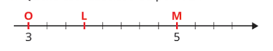
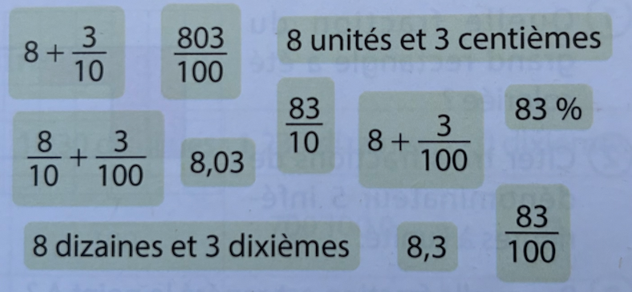

Donner l’abscisse du point L : ……………………

|
Un triangle équilatéral et un carré ont le même périmètre. Le côté du triangle mesure 24 mm. Quelle est la longueur du côté du carré ?
|
Dans la liste ci-dessous, entourer d’une même couleur les écritures qui représentent le même nombre.  |